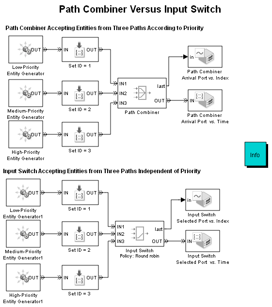
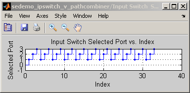
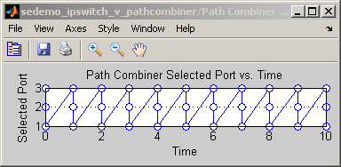
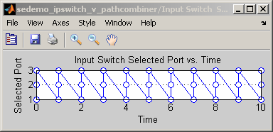

Path Combiner Versus Input Switch
Contents
Description
This model contrasts the Path Combiner block and the Input Switch block. The Path Combiner block accepts entities as they arrive at any port. The Input Switch accepts entities only from the port that is selected, where the selection changes in a round-robin fashion with the passage of each entity.
In the upper part of the model, entities from the high-priority entity generator arrive at the Path Combiner block before simultaneously generated entities having a lower priority. The plots from the Path Combiner block reflect the prioritized order in which the entities arrive at and pass through the Path Combiner block.
In the lower part of the model, the Input Switch block permits arrival only at the selected port. The prioritization of entity generation events does not influence the switch block. The plots from the Input Switch block reflect the ascending (round-robin) order in which the entities are selected by the Input Switch block.
Results and Displays
Selected Ports vs. Index
Selected Ports vs. Time
 